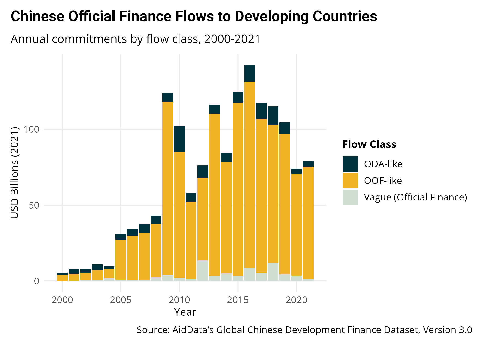
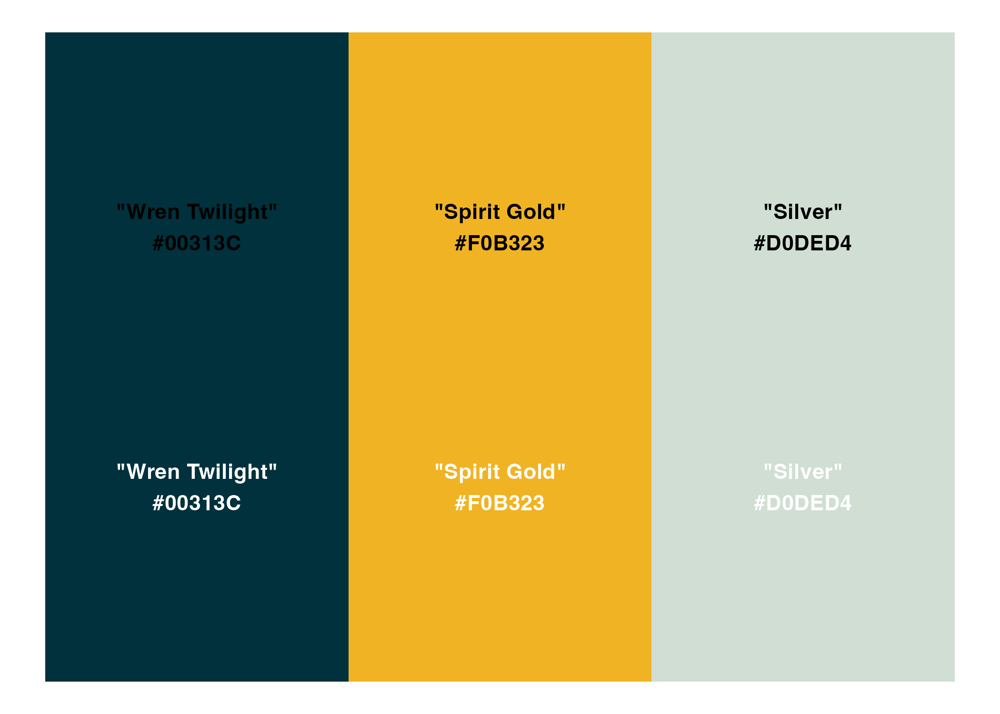
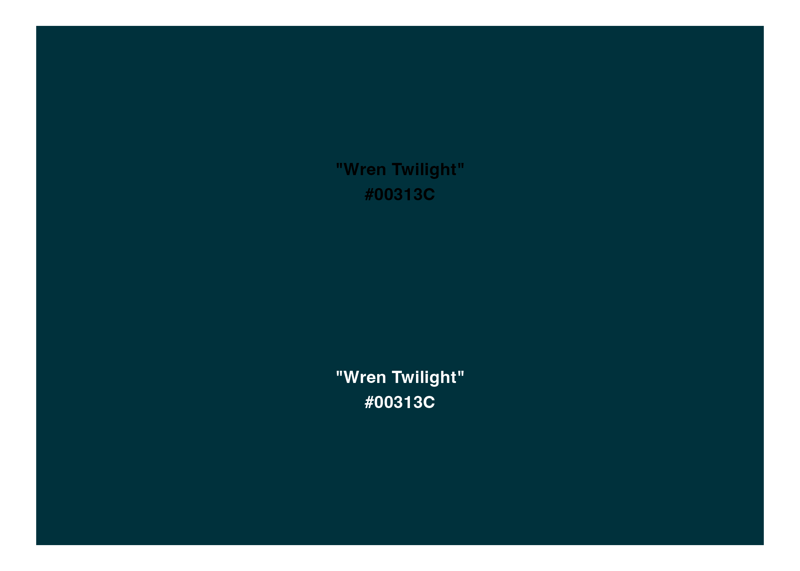
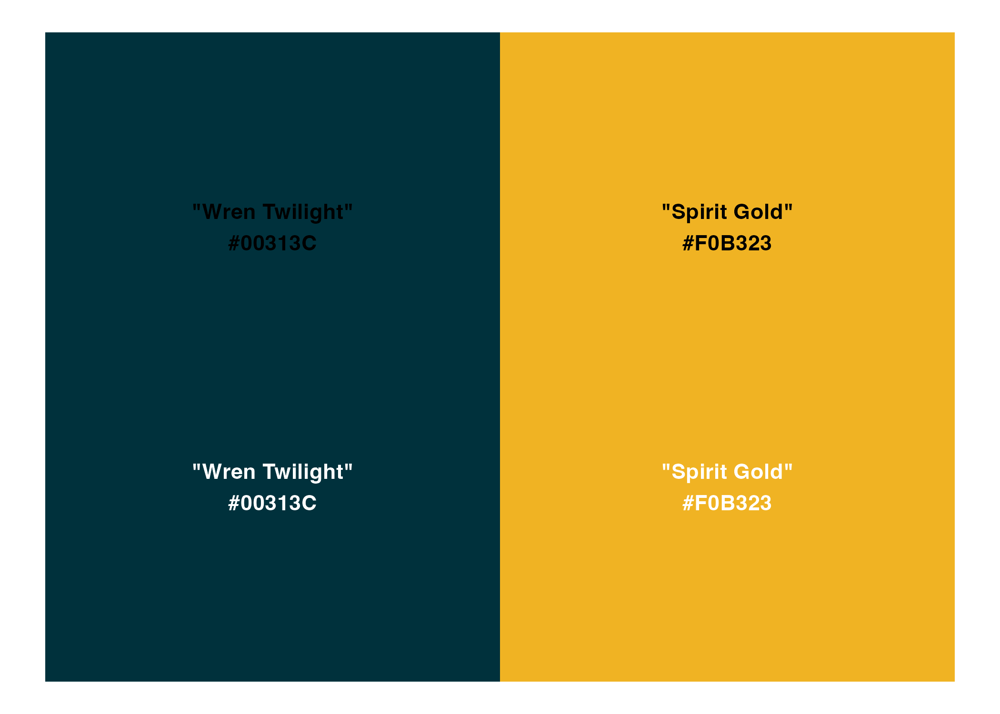

Overview
aiddataviz is a ggplot2 extension package that implements William & Mary’s brand guidelines for AidData visualizations. It provides themes, color palettes, and helper functions to create beautiful, accessible, and on-brand data visualizations.
This package was created by Teal Emery as part of an applied data analysis course for AidData staff. While it is intended for use by AidData, it is not an official AidData product.
NOTE: aiddataviz is brand new and still under heavy development. With your feedback, we can make this an awesome tool. Please understand it is a work in progress, and will likely have breaking changes (the code that works today, may not work tomorrow) in the coming weeks as it is finalized.
Installation
You can install the development version of aiddataviz from GitHub with:
# install.packages("pak")
pak::pak("Teal-Insights/aiddataviz")Fonts
When you load the aiddataviz package with library(aiddataviz), you will be prompted to install the required fonts (Roboto and Open Sans) automatically. Simply type y and press enter to install them.
If you’d prefer to install the fonts manually, you can get them from Google Fonts: - Roboto - Open Sans
On Windows, custom system fonts may be unavailable to the default RMarkdown rendering engine. If you’re having trouble, try setting dev = "ragg_png" in your RMarkdown chunk options. For example, add knitr::opts_chunk$set(dev = "ragg_png") to the top of your RMarkdown file.
Example
Here’s a basic example showing how to use aiddataviz themes and color scales to create visualizations in the style of AidData’s research publications:
library(aiddataviz)
library(ggplot2)
library(dplyr)
# Create a stacked bar chart of Chinese development finance flows
ggplot(gcdf_yearly_flows,
aes(x = commitment_year,
y = commitments_bn,
fill = flow_class)) +
geom_col() +
labs(
title = "Chinese Official Finance Flows to Developing Countries",
subtitle = "Annual commitments by flow class, 2000-2021",
x = "Year",
y = "USD Billions (2021)",
fill = "Flow Class",
caption = "Source: AidData's Global Chinese Development Finance Dataset, Version 3.0"
) +
scale_fill_aiddata(palette = "default") +
theme_aiddata()
Color Palettes
The package provides several color palettes based on William & Mary’s brand guidelines, designed for different visualization needs:
Note: These palettes were developed based on William & Mary’s brand guidelines and analysis of AidData’s publications. They can and should be adjusted based on feedback from the AidData communications team.
Categorical Palettes
Default (Three Colors)
The default palette uses AidData’s three primary colors: Wren Twilight blue, Spirit Gold, and Silver. This palette is ideal for categorical data with three groups and matches the style commonly used in AidData’s publications.
library(monochromeR)
aiddata_palettes$default |> view_palette()
One Color
For single-variable visualizations, we use Wren Twilight blue, William & Mary’s signature color.
aiddata_palettes$one_color |> view_palette()
Two Colors
Combines Wren Twilight blue and Spirit Gold for binary categorical data.
aiddata_palettes$two_colors |> view_palette()
Three Colors
Same as the default palette, provided for explicit naming consistency.
aiddata_palettes$three_colors |> view_palette()
Sequential Palettes
Diverging Palettes
Code of Conduct
Please note that the aiddataviz project is released with a Contributor Code of Conduct. By contributing to this project, you agree to abide by its terms.